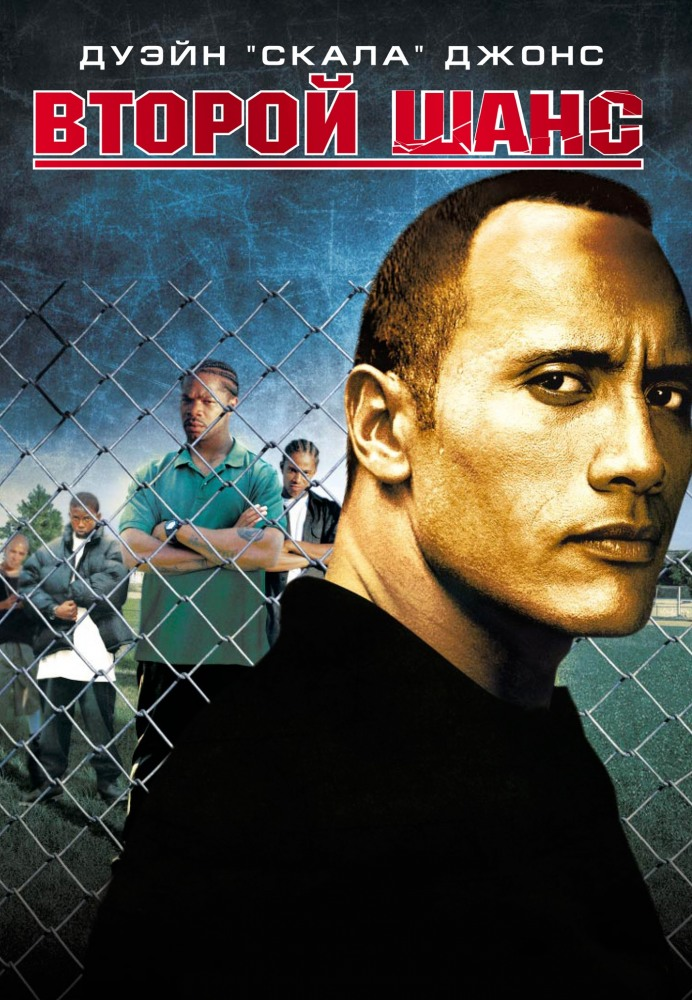
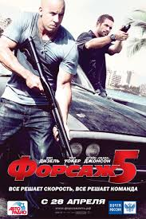
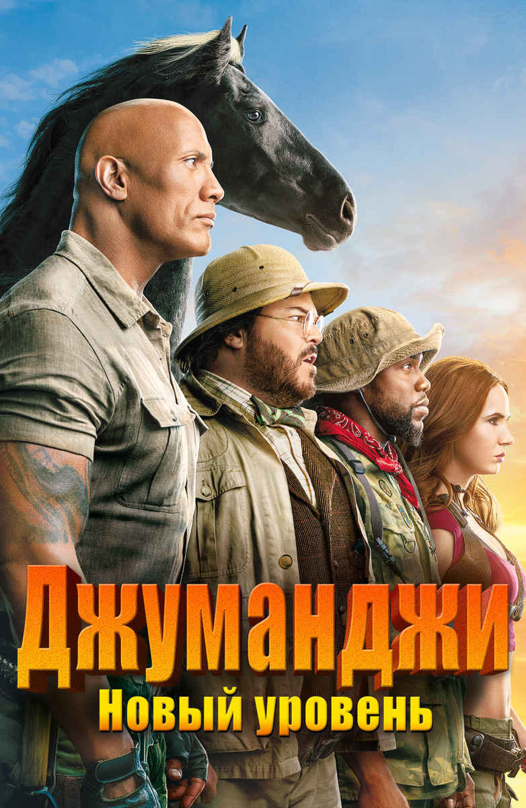
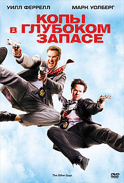
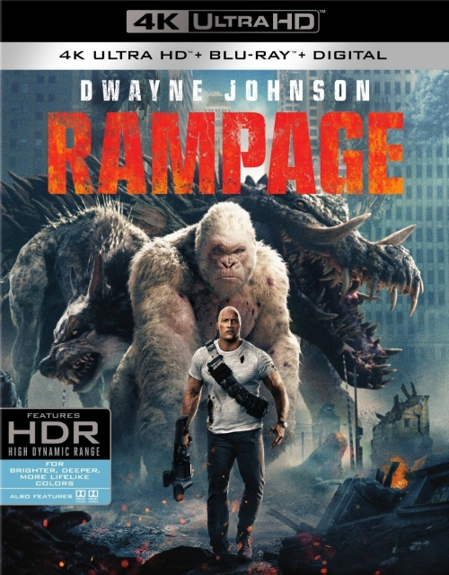
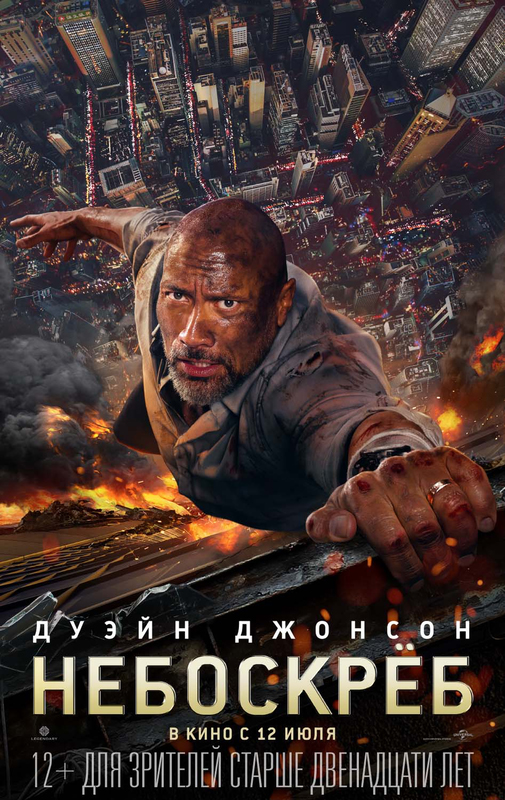
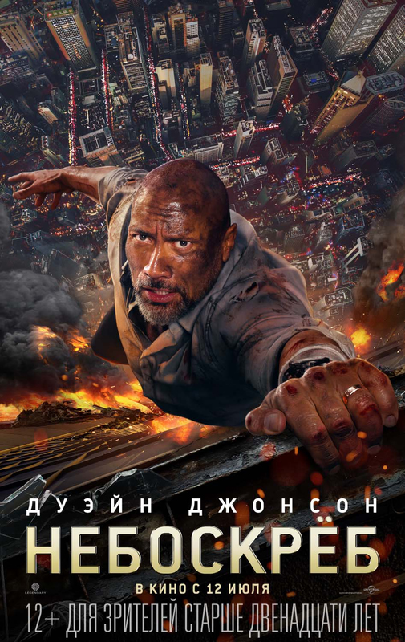

Фільми
Фильм Второй шанс
Дуэйн «Скала» Джонсон в криминальной драме режиссера Фила Джоану («Состояние исступления» с Шоном Пенном и Гари Олдманом, «Окончательный анализ» с Ричардом Гиром, Ким Бейсингер и Умой Турман).
Фильм Форсаж 5
Итак, наши старые друзья, команда благородных грабителей и профессиональных стритрейсеров, даже не думают уходить на покой. Далее последует лишь малая часть сюжета, а чем закончился фильм, вы можете посмотреть онлайн
Фильм Джуманджи: Новый уровень
Опытные игроки «Джуманджи» возвращаются в опасный виртуальный мир, чтобы вытащить своего друга Спенсера, но случайно прихватывают с собой двух невыносимых стариков
Фильм Копы в глубоком запасе
Искрометная комедия от гениального жанрового режиссера Адама МакКея, создавшего культовый фильм «Телеведущий» и картину «Сводные братья».
Фильм [4k] Рэмпейдж
Смотрите в 4К! Трое животных в разных уголках США становятся жертвами неудачных экспериментов в области генной инженерии, увеличиваются в размерах и начинают крушить все на своем пути. Способен ли хоть кто-нибудь их остановить?
Топ 2020
 
